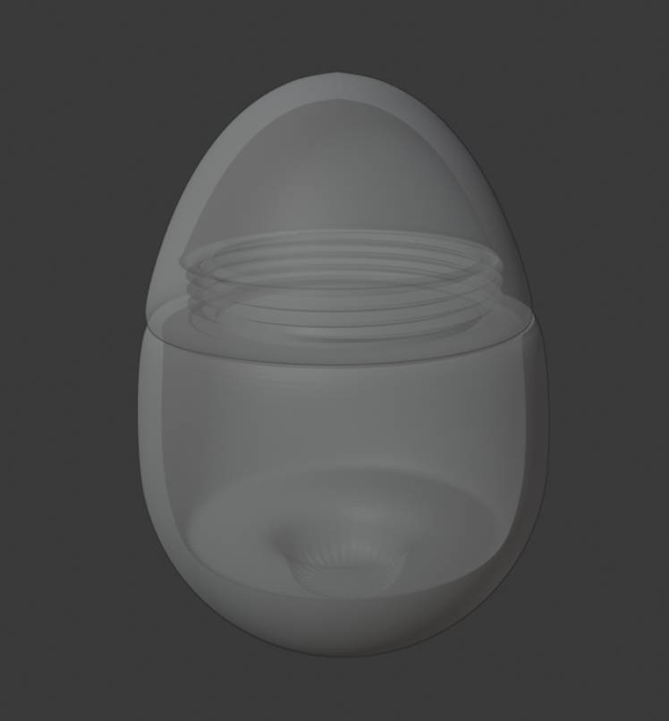
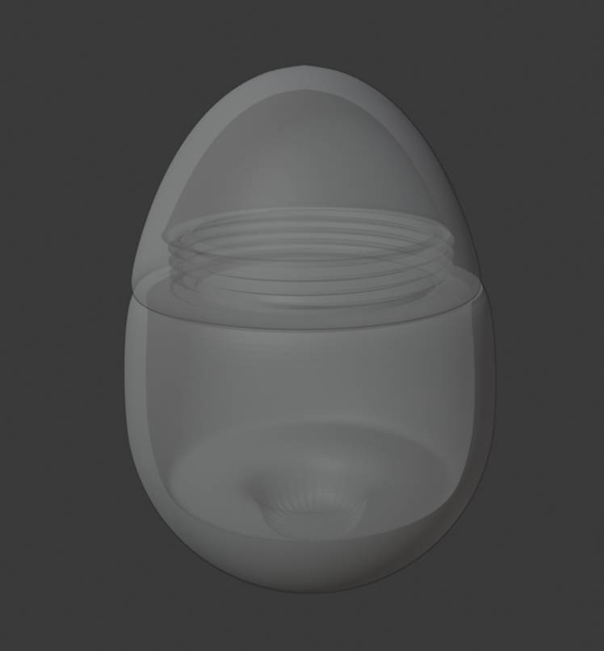

With the isolation associated with the Covid Pandemic, we designed a robot to combat loneliness. Cookie, an egg shaped robot, facilitates feelings of accompaniment with loved ones. In the midst of social distancing, little interactions from friends and family through a visio-haptic communication of the cookie can mean a lot. A wave to your personal Cookie can wirelessly trigger an excited swivel in the receiving Cookie with its rumble motor, or a few words to theirs can let you know their emotions via the onboard LED lights.
The implementation of this prototype is based on Arduino. The circuit diagram is shown on the left where all the parts are also revealed. We use a microphone to detect the voice and according to the loudness, various color will be shown from the LED light. A motion sensor is used to detect the motion of hands which will trigger the rumble motor. For the current prototype implementation, the signals are sent through bluetooth. However, for future improvement, this will be substituted with wifi. More detailed information and circuit pictures can be found here.
A 3D diagram is created to show the configuration of the shell which contains the electronic parts. It is designed in an egg shape to stay balanced while also has the ability to swivel. It is also in a small size to make it portable.
This is one of several projects that I explored with my teammates Mufaddal Ali and Izge Bayyurt on interactive systems and robotics. For more interactive system projects, please check out my git hub.
 
